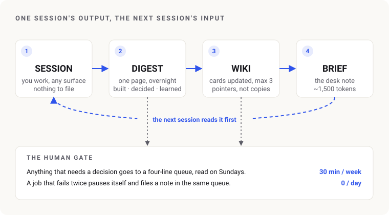

A Second Brain the AI Maintains
A knowledge vault that files every AI session overnight and briefs the next one, built on Karpathy’s LLM-Wiki pattern.
Context
Every AI session I ran started from zero. A decision made on Tuesday got re-argued on Thursday. Project status drifted between files. Three earlier attempts at a “master workspace” died because the upkeep landed on me. Karpathy’s LLM-Wiki idea flips the roles: the model maintains a wiki, the human curates sources and asks questions. I wanted to know if that holds when the sources are my own working sessions.
What I did
- Built the vault on Obsidian and Claude Code with three layers: immutable sources, a wiki the model owns, and a schema file that keeps it disciplined. Then I had a separate agent review it cold. Its verdict: well structured, never written to. The nightly job had failed 95 mornings in a row. Nobody noticed.
- Rebuilt from the loop that matters. Sessions enter as one-page digests, not transcripts. Documents that change enter as hash-tracked pointers, not copies. A generated 1,500-token brief is the only required reading for a new session.
- Made every write a transaction.
beginrefuses a dirty tree,endchecks and commits,rollbackexists. The scheduler sits behind a wrapper that pauses itself after two failures and files a question for my Sunday review. - Drew the privacy line in code. A blocklist tells touching a project apart from mentioning it. Facts about people are stored as categories until I confirm them. There’s a written way to erase. A second cold reviewer then attacked the rebuild and found 10 defects, 3 of them serious. All fixed before the first unattended run.

Outcome
- A cold session orients for about 1,600 tokens. It answers “where did I leave X, and why did I decide Y” from the vault alone, in about 8,000 tokens as measured by the reviewer.
- The first unattended run filed three sessions and told me something I didn’t know. Three scheduled tasks in September had died silently on an expired token. One project’s definition of done was never reached.
- My cost: nothing daily, half an hour on Sundays, ten seconds a week for a sync. Keeping it now costs less than ignoring it. That’s the only test these systems have ever failed with me.
![Two cards side by side. The Editor (me, decides): decides what enters the building, asks the questions, one editorial meeting a week, publishes, purges, stops collecting. The Librarian (the AI, maintains): catalogues every arrival, updates the cards it touches, leaves the morning desk note, does the weekly stock-take and never decides what the library is for. Beneath them, three library objects flow left to right: acquisitions (sources/, the editor's call), the catalogue (wiki/, the librarian's work), the desk note (brief.md, read first every day).](librarian-editor.svg)